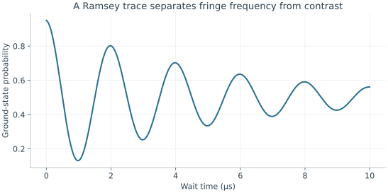
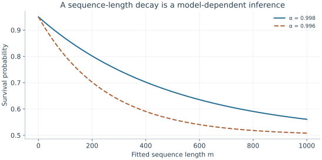

Starting point: Chapters 1–6; physical concepts and approximations are introduced as needed.
Anchor example: Estimating detuning from a Ramsey oscillation.
This lesson includes explanations, worked examples, and problems with solutions. Advanced results whose proofs are outside the chapter are identified explicitly.
Every model so far has parameters: a transition frequency, a Rabi frequency, a detuning, relaxation and coherence times, assignment errors. The device does not announce their values. We must infer them from experiments, and each inference is only as good as the model behind it. How do we measure a parameter, and what can such a measurement establish about a gate?
We first ask how to find a transition and calibrate a rotation, using the detuned Rabi formula. Asking how to measure a detuning precisely leads to free evolution between two pulses, the Ramsey and echo sequences. Asking for a complete description of a state or a process gives tomography. Asking for a gate's error rate without trusting the preparation and readout around it gives randomized benchmarking. Finally we ask what limits all of these methods: preparation and readout errors that mimic gate errors, finite samples, and drift.
Our first question is how to find a transition we have never seen.
7.1 Calibration Experiments
A calibration experiment produces a curve, and its features estimate parameters only through a model. Which experiments locate a transition, fix a rotation, and measure a detuning? Scanning the drive frequency and the pulse duration finds the resonance and the Rabi frequency. Letting a superposition evolve freely between two pulses then turns a small detuning into a fringe whose period we can read.
7.1.1 Spectroscopy and Rabi scans
How do we find a transition we have never seen? Spectroscopy varies the drive frequency and records the response after a fixed duration. A Rabi scan instead fixes the frequency near resonance and varies the duration. Neither alone is enough. In the detuned two-level model both the height and the frequency of the oscillation depend on \(\Delta\), so a large signal at one duration need not mark the exact resonance.
So we combine them. A weak frequency scan identifies a candidate transition. Duration scans at several nearby frequencies then test the detuned Rabi formula. At resonance the model predicts full oscillation height, although reduced contrast can also come from preparation, readout, or relaxation.
Why does the line get wider at higher drive power? The maximum transfer \(\Omega^2/(\Omega^2+\Delta^2)\) falls to one half at \(|\Delta|=\Omega\). The resonance therefore has a width of order \(2\Omega\), which grows with the drive strength. This widening is called power broadening. A response that deviates from it as power increases points to other levels or to drive corrections. In every case we should say which parameters were fitted and which were measured independently.
7.1.2 Ramsey and echo
How do we measure a small detuning precisely? We use the Ramsey sequence we met when slow noise dephased a qubit. A calibrated π/2 pulse makes an equal superposition. During a wait \(t\), the two amplitudes gain a relative phase \(\Delta t\) in the drive frame. A second π/2 pulse turns that phase into a population. Choose the second pulse's phase so that it undoes the first at zero delay. Multiplying the two rotation matrices and the diagonal waiting evolution gives the ideal result \(P_0=\tfrac12[1+\cos(\Delta t)]\). With imperfections,
Here \(V\) is the visibility, \(\phi_0\) a reference-phase offset, and the exponential envelope a fitted noise model. A 2 μs fringe period gives \(|\Delta|/(2\pi)=0.5\) MHz. The cosine is even, so it does not reveal the sign of \(\Delta\). Repeating with the analysis phase shifted by π/2 gives a sine fringe, which does. Inserting a π pulse halfway through the wait turns the sequence into an echo, which removes a static detuning and so isolates the faster noise.

The illustrative trace has period 2 μs, visibility 0.9, and an assumed exponential envelope. A cosine-only period gives detuning magnitude, not its sign.
Problem 7.1. What does a Ramsey period fail to reveal by itself?
Worked solution
It gives the magnitude of a detuning in the chosen model, but not its sign, the preparation error, or a full gate fidelity.
7.2 Process Characterization
Calibration fits a few parameters of an assumed model. Can we instead measure what a state or a gate actually is? And can we estimate a gate's error without trusting the preparation and measurement around it? Measuring three Pauli expectation values reconstructs a qubit's state, and probing several inputs reconstructs a process. Long random sequences then let gate errors accumulate while preparation and readout errors stay fixed.
7.2.1 State and process tomography
How many numbers describe a qubit's state, mixtures included? A qubit density matrix is a Hermitian two-by-two matrix with trace one. The matrices \(I,X,Y,Z\) form a basis of the Hermitian two-by-two matrices, and only \(I\) has nonzero trace. So \(\rho=(I+xX+yY+zZ)/2\) with real \(x,y,z\). Since \(\operatorname{Tr}(XY)=\operatorname{Tr}(YZ)=\operatorname{Tr}(ZX)=0\) and each Pauli matrix squares to \(I\), we find \(x=\operatorname{Tr}(\rho X)=\langle X\rangle\), and likewise for \(y\) and \(z\). These are the components of the Bloch vector.
How do we measure them? A Z measurement gives \(z=p_0-p_1\). Rotating the state before measuring gives \(x\) and \(y\) in the same way. The three expectations reconstruct every entry:
This reconstruction is called state tomography. A physical state requires \(x^2+y^2+z^2\le1\), so its Bloch vector lies in the unit ball. Finite sampling can give an estimate outside this ball, which is why constrained fits are used.
To characterize a process, we apply it to enough independent input states to determine its action on the whole basis \(I,X,Y,Z\). This is process tomography. It has a weakness: errors in preparing the inputs and in measuring the outputs are absorbed into the reconstructed process. So a reconstruction does not by itself certify the gate.
7.2.2 Randomized benchmarking
Can we separate gate errors from the fixed errors of preparation and readout? Apply a random sequence of \(m\) gates, then the single gate that ideally undoes the whole sequence, and measure. An ideal run always returns to the start. Gate errors accumulate with \(m\), while preparation and readout errors enter only once. The gates are drawn from the Clifford group, the gates that map Pauli matrices to Pauli matrices, because the undoing gate is then easy to compute. This method is called randomized benchmarking.
What decay does it predict? We quote a result from its theory, valid for errors that do not depend on time or strongly on which gate was applied. Averaging over random Clifford sequences makes the error of each step act like the depolarizing map
\[\mathcal D(\rho)=\alpha\rho+(1-\alpha)I/2.\]
Writing \(\rho=(I+\mathbf r\cdot\boldsymbol\sigma)/2\) gives \(\mathcal D(\rho)=(I+\alpha\,\mathbf r\cdot\boldsymbol\sigma)/2\), so each step shrinks the Bloch vector by \(\alpha\). After \(m\) steps its length is multiplied by \(\alpha^m\), and the survival probability takes the form \(A\alpha^m+B\). Preparation and readout enter only \(A\) and \(B\).
What error per gate does \(\alpha\) imply? For a pure input, one depolarizing step has fidelity \(\operatorname{Tr}[\rho\,\mathcal D(\rho)]=\alpha+(1-\alpha)/2=(1+\alpha)/2\), so the infidelity per step is \((1-\alpha)/2\). This is an error per Clifford, not per native pulse, since one Clifford may need several pulses. Leakage, drift, and strongly gate-dependent errors break the assumptions of the quoted result.

Both curves use A = 0.45 and B = 0.5. Under the effective single-qubit depolarizing model, infidelity per fitted element is (1−α)/2; it is not automatically per native pulse.
Problem 7.2. For α=0.998, what is the single-qubit depolarizing-model error per Clifford?
Worked solution
It is (1−0.998)/2=0.001. The qualification about the model and the counted gate type is essential.
7.3 Measurement Limits
Each method separates some errors from others, under its own assumptions. What can no single experiment separate, and how do we know a calibration still holds later? Preparation, gate, and readout errors can mimic one another unless experiments vary their sensitivity. Sampling noise falls as shots accumulate, but drift and model error do not.
7.3.1 Preparation and measurement errors
Suppose a tomography experiment reports \(p_1=0.1\) after an intended identity. Which part of the experiment failed? The number might describe a bad preparation, a bad gate, a detector offset, or several of these together. One observation cannot identify three causes.
So we design experiments whose sensitivities differ. Varying the sequence length separates a fixed loss of contrast from an error that accumulates. Changing the input basis exposes phase errors, and resolving extra levels exposes leakage. A benchmarking decay moves fixed errors into its offsets, but it does not reconstruct each preparation and readout operation. When the calibration uncertainty is comparable to the error being claimed, it is part of the result.
7.3.2 Drift and validation
How many shots do we need? For \(N\) independent binary measurements with success probability \(p\), the count has variance \(Np(1-p)\), so the observed fraction has variance \(p(1-p)/N\). More shots reduce this sampling noise. They do not remove model error or slow drift.
How do we detect drift? Interleave two sequences instead of taking all shots of one and then all of the other, so that drift affects both equally. Split the data into time blocks and compare the fitted parameters, and look at residuals rather than only a best-fit number. Finally, test the calibration on sequences that were not used in the fit, including simultaneous operations on neighbours when the intended workload uses them. A calibration is useful when its prediction survives such a change of context.
Problem 7.3. Why repeat a benchmark with simultaneous neighboring operations?
Worked solution
Crosstalk and shared-control effects may not appear when gates are tested in isolation. The intended workload may involve parallel activity.
With a common language for control, noise, and characterization, we can examine real devices. What does it take to make a qubit out of an electrical circuit?
Worked model check. An effective single-qubit depolarizing fit gives alpha=0.996. Find its error per fitted sequence element. Does this establish an error per native pulse?
Worked solution
\((1-0.996)/2=0.002\). The interpretation applies to the fitted element, such as a Clifford. Converting to native pulses requires their decomposition and an additional noise model.
These exercises draw on the whole chapter. Attempt each question before opening a hint, explain your reasoning, then compare it with the worked solution.
A Ramsey fringe has a period of \(4\) μs. What is \(|\Delta|/2\pi\)? Why does a cosine-only trace not determine whether the qubit is above or below the drive frequency?
Hint 1
One period corresponds to \(\Delta t=2\pi\).
Hint 2
\(\cos(\Delta t)=\cos(-\Delta t)\).
Worked solution
\(|\Delta|/2\pi=1/(4\ \mu\mathrm s)=0.25\) MHz. The trace depends on \(\cos(\Delta t+\phi_0)\), and with \(\phi_0=0\) the values for \(+\Delta\) and \(-\Delta\) coincide. Measuring with a second analysis phase, which gives the sine, or repeating with a deliberately shifted drive frequency, reveals the sign.
Tomography gives \(\langle X\rangle=0.6\), \(\langle Y\rangle=0\), \(\langle Z\rangle=0.6\). Write \(\rho\), check that it is physical, and find its purity \(\mathrm{tr}\rho^2=\frac12(1+|\vec r|^2)\).
\(\rho=\frac12\begin{pmatrix}1.6&0.6\\0.6&0.4\end{pmatrix}\). The Bloch length is \(\sqrt{0.72}\approx0.85\le1\), so it is physical. The purity is \(\frac12(1+0.72)=0.86\): a partly mixed state lying between \(\ket0\) and \(\ket+\) on the Bloch sphere.
Randomized benchmarking fits \(\alpha=0.995\) per Clifford. Find the depolarizing-model error per Clifford. If an average Clifford is compiled into \(1.875\) native pulses, what rough error per native pulse does this suggest, and what assumption does that division make?
Hint 1
Error per Clifford is \((1-\alpha)/2\).
Hint 2
Division assumes errors add equally per pulse.
Worked solution
Error per Clifford is \((1-0.995)/2=2.5\times10^{-3}\). Dividing by \(1.875\) suggests about \(1.3\times10^{-3}\) per native pulse. That assumes every native pulse contributes equally and independently, which fails if some pulses (or the idle periods between them) are much worse than others. Per-pulse error needs a separate experiment, such as interleaved benchmarking.
Finite-shot tomography gives \(\langle X\rangle=0.70\), \(\langle Y\rangle=0.10\), \(\langle Z\rangle=0.75\). (a) Compute the Bloch length and the smallest eigenvalue \((1-|\vec r|)/2\) of the estimated \(\rho\). (b) With \(1000\) shots per basis, is the excess consistent with sampling noise? (c) What should be reported instead of the raw estimate?
Hint 1
\(|\vec r|=\sqrt{0.49+0.01+0.5625}\).
Hint 2
The standard deviation of an expectation from \(N\) shots is about \(\sqrt{(1-\langle\cdot\rangle^2)/N}\).
Worked solution
(a) \(|\vec r|\approx1.031\), so the smallest eigenvalue is about \(-0.015\): the raw estimate is not a valid density matrix. (b) The standard deviations are about \(\sqrt{0.51/1000}\approx0.023\) for \(X\) and \(\sqrt{0.44/1000}\approx0.021\) for \(Z\), so an overshoot of \(0.03\) in length is about one standard deviation: consistent with sampling noise around a nearly pure state. (c) A constrained (for example maximum-likelihood) estimate restricted to \(|\vec r|\le1\), together with uncertainty estimates, rather than an unphysical matrix.
A benchmarking experiment fits \(A\alpha^m+B\) with \(B=0.5\). Measured survivals are \(0.772\) at \(m=50\) and \(0.665\) at \(m=100\). (a) Extract \(\alpha\) without knowing \(A\). (b) Find \(A\) and the error per Clifford. (c) Why is it useful that \(\alpha\) is extracted from the decay rather than from a single sequence length?
Hint 1
\((S_{100}-B)/(S_{50}-B)=\alpha^{50}\).
Hint 2
\(0.165/0.272\approx0.607\).
Worked solution
(a) \(\alpha^{50}=(0.665-0.5)/(0.772-0.5)\approx0.607\), so \(\alpha\approx0.607^{1/50}\approx0.990\). (b) \(A=0.272/0.990^{50}\approx0.45\), and the error per Clifford is \((1-0.990)/2\approx5\times10^{-3}\). (c) Preparation and measurement errors affect \(A\) and \(B\) but not the rate of decay with \(m\); comparing sequence lengths separates per-gate error from fixed state-preparation and readout errors, which a single-length survival would mix together.
After \(m\) repeated identity gates, the measured excited population is \(0.100\) at \(m=0\), \(0.120\) at \(m=10\), and \(0.140\) at \(m=20\). (a) Fit a straight line and interpret the slope and intercept. (b) Can the intercept be split into preparation and readout errors from these data alone? (c) Propose an additional measurement that would help.
Hint 1
Slope: population added per gate.
Hint 2
Both preparation and readout errors appear at \(m=0\).
Worked solution
(a) The slope is \(0.002\) per gate, an accumulating error such as relaxation-induced or coherent leakage into \(\ket1\) per gate; the intercept \(0.10\) is a fixed contribution independent of the number of gates. (b) No: a bad preparation and a detector offset both add a constant at \(m=0\). (c) Measure the readout alone with a heralded or independently verified state, or prepare \(\ket1\) and compare \(p_{\rm report}(1)\) with the expected value; alternatively vary the readout (integration, threshold) while keeping the preparation fixed. Sensitivity to different parameters is what separates causes.
Two calibrations are expected to give survival probabilities differing by \(0.005\) near \(p=0.9\). (a) How many shots per calibration are needed for the difference to equal two standard deviations? (b) If the experiment drifts by \(0.01\) per hour and each calibration takes an hour when run sequentially, what bias results? (c) How does interleaving fix it?
Hint 1
The difference of two fractions has variance \(2p(1-p)/N\).
Hint 2
Require \(2\sqrt{2p(1-p)/N}\le0.005\).
Worked solution
(a) \(2\sqrt{2\times0.09/N}\le0.005\) gives \(N\ge4\times0.18/2.5\times10^{-5}\approx2.9\times10^4\) shots each. (b) Running the second calibration an hour after the first shifts its result by \(0.01\) relative to the first, twice the effect being measured. (c) Alternating short blocks of the two sequences makes both experience the same drift, so the difference is unbiased to first order; comparing blocks over time also measures the drift itself.
A student reports: “Process tomography shows my gate has fidelity \(99.9\%\), so its error is \(10^{-3}\).” The tomography assumed perfect preparation and measurement bases, which were calibrated using the same gate. Explain how the result can be misleading, and name a method less sensitive to this problem.
Hint 1
If the reference pulses share the gate’s error, the error appears as part of the reference.
Hint 2
Which method is insensitive to fixed preparation and readout errors?
Worked solution
Tomography reconstructs a process relative to the preparations and measurements used. If those were built with the same miscalibrated pulse, part of the gate error is absorbed into the reference frame and disappears from the reconstruction, while preparation and readout errors can be wrongly attributed to the gate. The reported \(99.9\%\) is then a statement about consistency, not accuracy. Randomized benchmarking estimates average error from how survival decays with sequence length, so fixed preparation and measurement errors enter only the offsets; it still relies on its own assumptions (stationary, gate-independent noise).
Resolve the Ramsey sign ambiguity by measuring with two analysis phases, giving \(P_c=\frac12[1+V\cos(\Delta t)]\) and \(P_s=\frac12[1+V\sin(\Delta t)]\) (ignoring decay). (a) At \(t=0.5\) μs, what do the two signals give for \(\Delta/2\pi=+0.5\) MHz and \(-0.5\) MHz? (b) How do the two signals together determine \(\Delta t\) modulo \(2\pi\)? (c) Why is this called quadrature detection?
Hint 1
\(\Delta t=\pm\pi/2\) at \(t=0.5\) μs.
Hint 2
\((2P_c-1,2P_s-1)\) is \(V(\cos\Delta t,\sin\Delta t)\).
Worked solution
(a) For \(+0.5\) MHz, \(\Delta t=\pi/2\): \(P_c=\frac12\), \(P_s=\frac12(1+V)\). For \(-0.5\) MHz: \(P_c=\frac12\), \(P_s=\frac12(1-V)\). The cosine signal is identical; the sine signal differs. (b) \((2P_c-1,2P_s-1)=V(\cos\Delta t,\sin\Delta t)\) is a point on a circle of radius \(V\), whose angle is \(\Delta t\) with its sign. (c) The two analysis phases differ by \(\pi/2\) and measure the two quadratures of the precessing phase, just as an I/Q demodulator measures a signal’s in-phase and quadrature components.
Show that for the depolarizing channel \(\mathcal D(\rho)=\alpha\rho+(1-\alpha)I/2\), the fidelity with a pure input is \((1+\alpha)/2\) for every input, and that after \(m\) applications the Bloch vector shrinks by \(\alpha^m\). Then explain why randomizing the gates with random Cliffords tends to make an arbitrary error look depolarizing, and name one error type for which this description fails.
Hint 1
\(\mathrm{tr}[\ket\psi\bra\psi I/2]=\frac12\).
Hint 2
Random Cliffords average an error over all directions.
Worked solution
For pure \(\ket\psi\), \(\bra\psi\mathcal D(\ket\psi\bra\psi)\ket\psi=\alpha+(1-\alpha)\frac12=\frac{1+\alpha}{2}\), independent of \(\psi\). Writing \(\rho=\frac12(I+\vec r\cdot\vec\sigma)\), \(\mathcal D\) maps \(\vec r\to\alpha\vec r\), so \(m\) applications give \(\alpha^m\vec r\). Random Cliffords rotate the error into random directions on each step, and averaging over them washes out any preferred axis, leaving an isotropic shrinkage: the depolarizing form. The description fails for leakage, which leaves the qubit space, and for errors that drift during the experiment or depend strongly on which gate is applied.